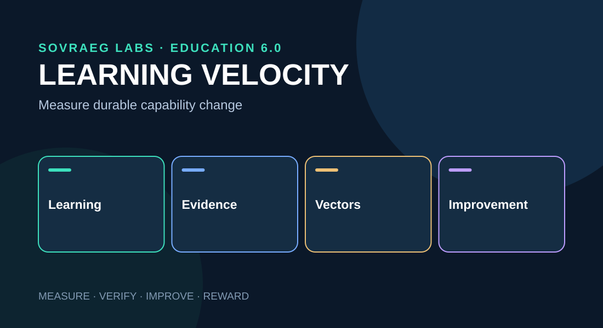

Learning Velocity
A deployable, self-contained chapter in the SOVRAEG Learning Velocity research series, with interactive demonstrations and local media assets.
Research proposal · v0.1
Original user prompt
Definition and principles
Learning Velocity (LV) is the measurable rate at which a learner develops durable, demonstrable, and transferable knowledge or capability relative to a defined starting state and invested effort.
Unlike simple completion-time measures, LV separates acquisition, mastery, retention, transfer, learning efficiency, independence, adaptability, and sovereignty. A learner may move rapidly through content while retaining little. The objective is sustainable advancement toward personally meaningful mastery.
Measurement model and live calculator
The simplest operational measure is Durable Learning Velocity = (delayed proficiency − baseline proficiency) / active learning hours. This is meaningful only when the assessments and proficiency scale are calibrated and comparable.
Illustrative, not a validated psychometric measure. Negative values represent observed decline; causal inference requires a comparison condition.
A richer model represents learning as a state vector spanning conceptual, procedural, reasoning, transfer and metacognitive dimensions. The derivative of that vector with respect to time is a conceptual representation of learning velocity; in practice, intermittent assessment estimates the changes.
Learning trajectories
Two methods may differ in immediate performance but produce opposite long-term retention patterns. This chart contrasts a hypothetical video-first approach against a spaced, coached approach.
Hypothetical 0–100 proficiency data. The final observation represents delayed performance, not elapsed effort.
Learning vector taxonomy
| Vector family | Examples |
|---|---|
| Pedagogical | Retrieval practice, deliberate practice, inquiry, reflection |
| Media | Text, video, audio, simulation, immersive environments |
| Technology | Adaptive SYNCZ, AI tutors, feedback systems |
| Human and social | Mentors, SOVRAEGES, peers, guild assessors |
| Temporal | Spacing, scheduling, interleaving, prerequisites |
| Contextual | Accessibility, resources, language, environment |
| Metacognitive | Self-assessment, goal-setting, agency |
Each vector should have a persistent identifier, version, intended competency, exposure conditions, outcome evidence, resource cost, and privacy rules.
SOVRAEG ecosystem integration
SYNCZ provide instrumented learning objects; SYNCZINES orchestrate learning pathways; SYNCTESS hold evidence of capability through CODE+V; SYNTHCREDS attest verified mastery. SOVRAEGIX supports SOVRAEGES, while SYNCFORGE uses effectiveness feedback to improve learning design.
The Learning Velocity Observatory (LVO) combines learner progress dashboards, design effectiveness analysis, and aggregate ecosystem stewardship intelligence.
Evidence and validation strategy
Distinguish observed associations from causal contributions. A high-performing SYNCZINE might attract more prepared learners; the design alone may not account for the outcomes. Evaluate interventions using shared assessments, baseline adjustments, credible counterfactuals, and where feasible randomized or quasi-experimental comparisons.
- Define a specific competency and rubric.
- Measure baseline performance.
- Compare intervention configurations with controlled exposure records.
- Assess immediate, delayed, independent, and transfer performance.
- Estimate effects with uncertainty and evaluate measurement reliability.
- Feed findings into improved SYNCZ and SYNCZINES.